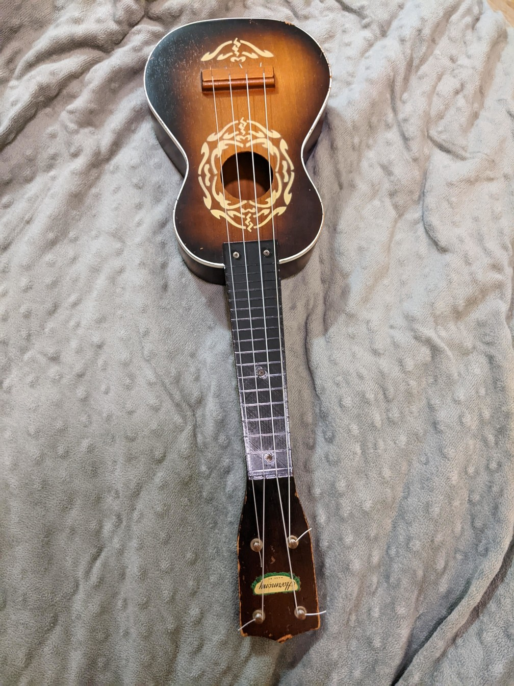

Late in 2023, I decided to buy a ukulele so I could have a travel instrument that I could take with me when I leave town. My idea was to convert into a fretless instrument and tie fishing line or zipties around the neck to have the tuning be adjustable. However, when I went to this local music store, there was an old Harmony ukulele with a plastic fretboard that appeared to be held on with a few screws. So I bought it and confirmed that was the case.So instead, I had another idea. Why not swap out the fretboard for a 3D-printed microtonal one? And that’s what I ended up doing. After taking measurements of the ukulele and modeling a basic fretless fingerboard in Blender and having it printed as a test, I attempted to model a 17-tone fretboard and had it printed once again. The measurements for this fretboard were a little bit off, so I adjusted the model and had yet another one printed. This ended up being the one I kept.
I also bought some new Aquila Nylgut strings as was recommended to me by someone I knew, and tuned them in all fourths from each other. The resulting intonation of the instrument seemed great, and it was actually pretty playable. I ended up taking to Arizona with me for the holidays, and I even used it later in my song Anemones.
I could make other fretboards for the ukulele, but at least for now, I’ve decided to keep the 17-tone one on. I don’t want to further wear away the screw holes in the neck underneath the fretboard, and eventually, I may do a nicer fretboard job on it (with real wood and metal frets). Despite the age of the instrument, it seems like it’s not really that fragile and can withstand a bit of knocking around inside a suitcase.